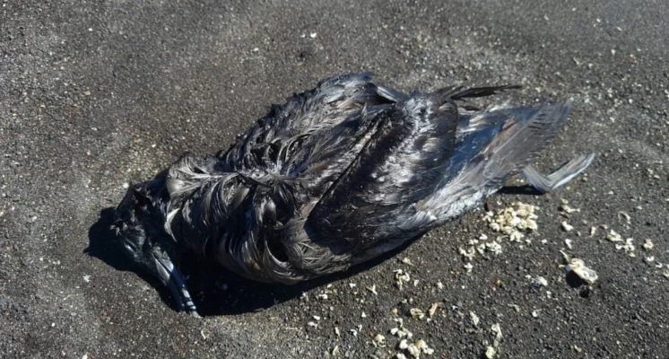

Cierran todo el borde costero de San Pedro de la Paz por sospecha de gripe aviar: hay aves muertasNacionalEl municipio de San Pedro de la Paz informó la tarde de este miércoles que se cerró todo el borde costero de la comuna, ante la sospecha de gripe aviar. Lo anterior por la presencia de más de 20 aves muertas en la playa de la zona. Tal como señala el propio municipio a través de sus redes sociales, esta es una medida preventiva ante el hallazgo de ejemplares en la playa. Esto se mantendrá hasta que el Servicio Agrícola y Ganadero descarte que se trate efectivamente de gripe aviar. Nelson Sanhueza, inspector municipal del Departamento de Medio Ambiente, señaló que se encuentran en Alerta Roja preventiva, por la aparición de las aves muertas. “Le pedimos a los vecinos que no se acerquen a la playa”, llamó el funcionario municipal. También solicitó no soltar perros en la playa.  |
Detienen a hombre en situación de calle acusado de robar cafetería en el centro de TemucoNacionalUn hombre en situación de calle fue detenido por detectives de la Brigada Investigadora de Robos (BIRO), como presunto autor por el delito de robo en lugar habitado, en una cafetería ubicada en avenida Alemania, Temuco, región de La Araucanía. Las especies recuperadas están avaluadas en casi medio millón de pesos, las cuales fueron sustraídas por el sujeto la madrugada del pasado domingo, según detalló el comisario, Leonardo Álvarez. “Los primeros antecedentes dicen relación con la participación de un sujeto que en horas de la noche, mientras el local se encontraba cerrado fracturó una puerta de vidrio por la cual hizo ingreso, y desde el interior sustrajo productos alimenticios, una bicicleta y dinero en efectivo“, afirmó. Del trabajo en el sitio del suceso, se obtuvo por parte de los oficiales declaraciones de testigos, además de que se efectuó el análisis de imágenes a cámaras de seguridad internas y externas al local, lo que permitió individualizar al responsable de este hecho delictual, dando con la identidad del hombre, quien mantiene antecedentes por delitos semejantes. Se comunicó las diligencias al fiscal de turno de la Fiscalía de Flagrancia y Primera Diligencias, quien intruyó que el detenido pasara a control de detención en el Juzgado de Garantía de Temuco. Este es el reporte que entrego carabineros |
Aguas Andinas crea servidor de Minecraft para concientizar sobre sequía en Chile: Revisa cómo jugarloNacionalLa empresa chilena de servicios sanitarios, Aguas Andinas, creó un servidor para Minecraft que recrea lugares icónicos de Santiago, para concientizar sobre la actual sequía y los efectos del cambio climático en la naturaleza. Se trata de un videojuego de “mundo abierto” que cuenta con más de 12 años de trayectoria y que cuenta con la distinción de ser el más vendido en toda la historia, con 238 millones de copias distribuidas. Además de ser medios de entretención, los videojuegos pueden servir de herramientas para poder llegar de mejor forma a niños y jóvenes, implementando, por ejemplo, servidores temáticos en algunos títulos populares. Es algo que la compañía chilena Aguas Andinas realizó con el videojuego Minecraft, bajo una campaña llamada “Ciudad Resiliente”, la cual busca concientizar sobre los problemas hídricos que afectan al mundo en la actualidad y, específicamente, a la región Metropolitana. El proyecto fue implementado en el videojuego de la empresa Mojang con el fin de involucrar y educar a las personas sobre la mega sequía, informando acerca de cuáles son las obras de infraestructura que han permitido enfrentar los efectos del cambio climático sin impactos en el suministro de agua potable. Se trata de una problemática que afecta a varias regiones del país, como la capital, que lleva más de 14 años de extrema sequía, la más grave desde que se tiene registro. En el mencionado servidor de Minecraft de Aguas Andinas, los jugadores podrán realizar un viaje virtual en tren por distintas estaciones de la ciudad. Por ejemplo, se puede recorrer lugares como el embalse “El Yeso”, los megaestanques de Pirque, la planta de producción de agua potable Las Vizcachas, el edificio corporativo de Aguas Andinas y la Biofactoría, entre otras. Todo en busca de educar sobre el trabajo que ha hecho la compañía, además de contar con mecanismos de Minecraft y memes escondidos en diferentes rincones del mapa. Sumergirte en el mundo de esta versión nacional del videojuego es bastante fácil. Primero debes obtenerlo, por ejemplo, desde el mismo sitio web. Una vez que lo tengas, debes agregar el servidor de “Ciudad Resiliente”, escribiendo: “minecraft.aguasandinas.cl”, donde dice Dirección IP y listo. |